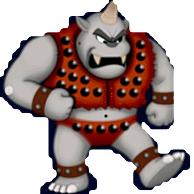
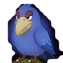
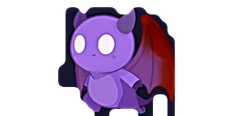

Supported by Opus, Fable, agents in Sonnet
Un omaggio non ufficiale al classico arcade CAPCOM del 1985: fedele all'originale, ridipinto in chiave moderna.An unofficial tribute to CAPCOM's 1985 arcade classic: faithful to the original, repainted in a modern style.
Fedele all'arcadeFaithful to the arcade
La fisica di Arthur, i salti, le armi, i nemici e i boss sono ricostruiti con cura per riprodurre fedelmente il comportamento del gioco da sala.Arthur's physics, jumps, weapons, enemies and bosses are carefully reconstructed to reproduce the behaviour of the coin-op faithfully.

Tutti i sette livelliAll seven stages
Dal cimitero al palazzo di Astaroth, con i boss, le chiavi, i bonus nascosti e il finale da completare due volte, come in sala giochi.From the graveyard to Astaroth's palace, with the bosses, the keys, the hidden bonuses and the ending you must finish twice, as in the arcade.
Grafica modernaModern graphics
Sfondi e personaggi ridipinti in stile pittorico, con le stesse sagome, proporzioni e posizioni del gioco da sala. Si può passare anche a uno stile classico.Backgrounds and characters repainted in a painterly style, with the same silhouettes, proportions and positions as the coin-op. A classic style is available too.
Atmosfera da sala giochiArcade atmosphere
Schermata del titolo, demo automatica, scena d'apertura, mappa tra i livelli e classifica con le iniziali, con le musiche e gli effetti del gioco da sala.Title screen, attract demo, opening scene, map between stages and high-score table with initials, with the music and sound effects of the coin-op.

Si gioca ovunquePlay anywhere
Tastiera, joypad e comandi touch per iPad e per il browser delle auto Tesla.Keyboard, gamepad and touch controls for iPad and for the Tesla car browser.

OpzioniOptions
Tasti configurabili e memorizzati nel browser, god mode, selettore del livello e scelta della grafica.Rebindable keys stored in your browser, god mode, stage select and graphics choice.
Tutte le versioni pubblicate (6) · ultima: v40 · Bottoni GFX, MUS e OPZ sul piede delle schermate; GOD solo in OPZIONIAll published versions (6) · latest: v40 · Bottoni GFX, MUS e OPZ sul piede delle schermate; GOD solo in OPZIONI
Se ti è utile, offrimi un caffè. Questo tributo non ha sponsor e non vende niente. Se ti diverte, puoi contribuire — e se non ti va, giocalo lo stesso.If you enjoy it, buy me a coffee. This tribute has no sponsors and sells nothing. If you like it, you can chip in — and if you'd rather not, play it anyway.
Offrimi un caffèBuy me a coffee